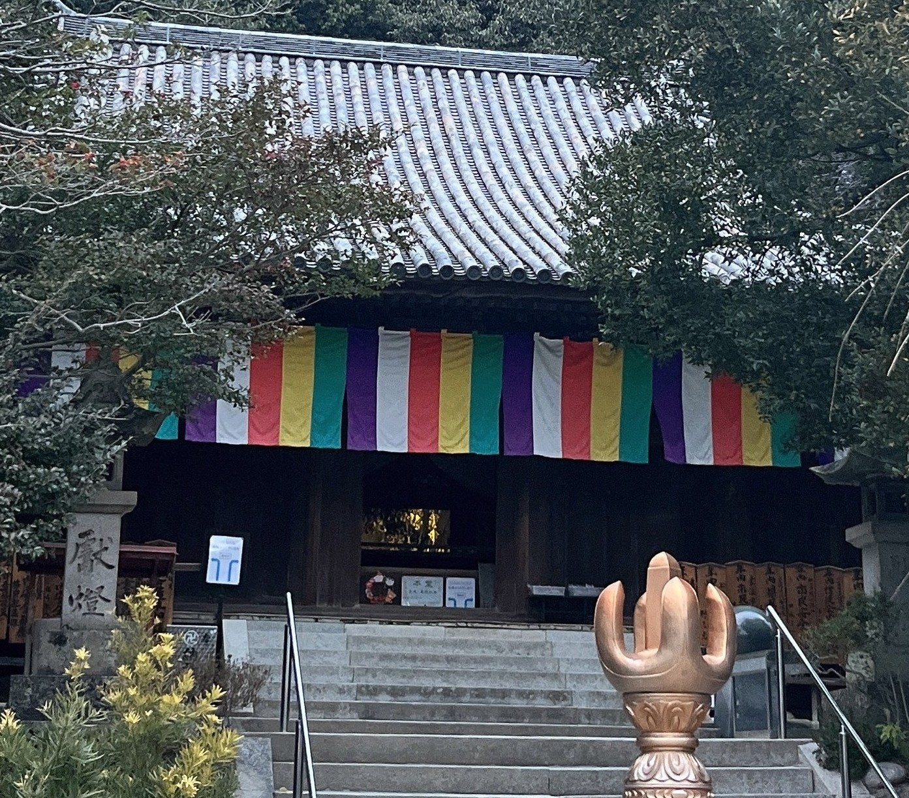
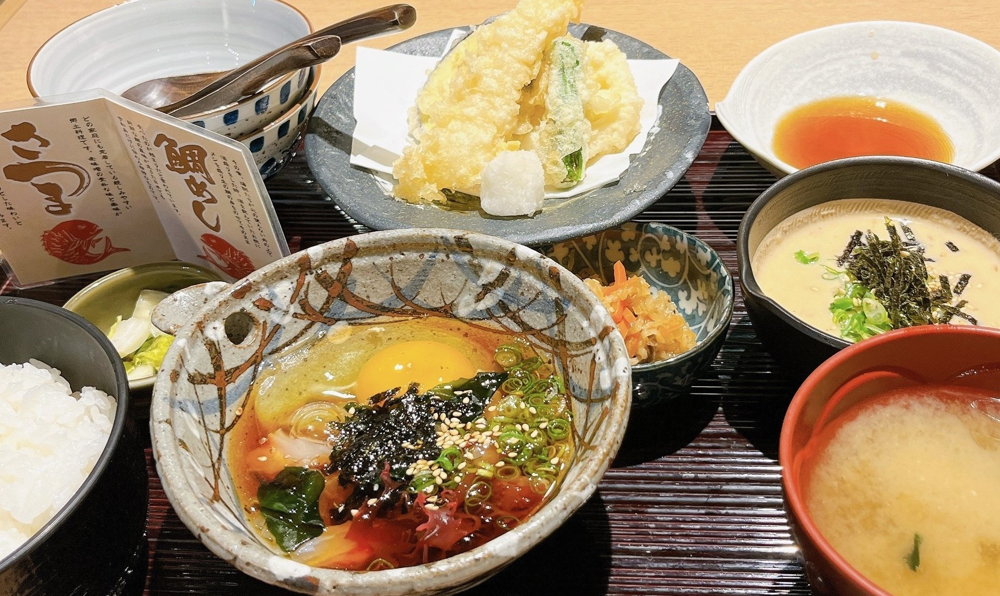
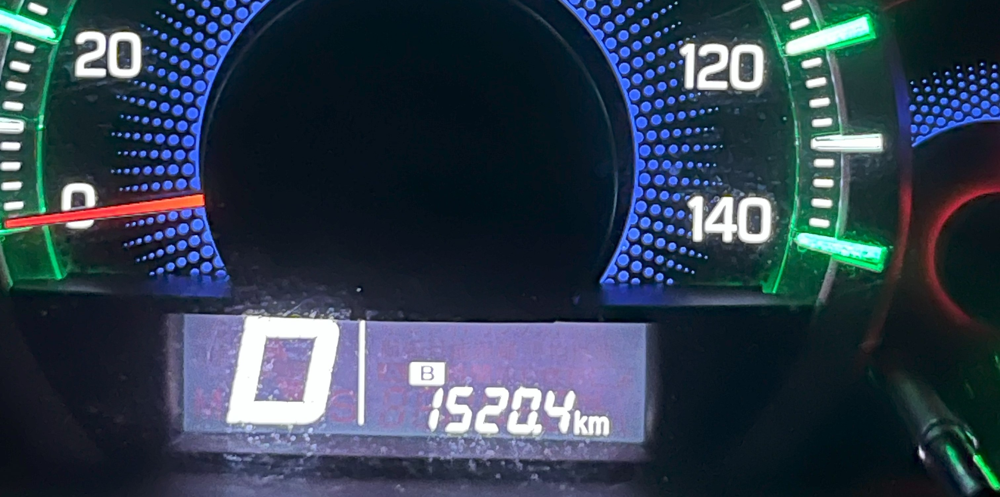

～香川県＆徳島県＆愛媛県編～
2022年12月6日～8日に香川県と徳島県と愛媛県を旅行した記事になります！
今回は観光名所やご当地グルメを多く紹介しているためモデルコースになれば幸いです！
お堀を船で観光も！高松城跡！

玉藻公園内にある高松城跡！
お堀の水はとてもきれいで鯛の餌やり体験や
船に乗ってお城の歴史を知れる城船体験があります！
高松城跡
営業時間：4月～9月 7:00～18:00
10月～3月 8:30～17:00(東門)定休日：12月29日～12月31日
駐車場：あり
住所：香川県高松市玉藻町2-1
URL： 高松城【玉藻公園】公式ウェブサイト
香川県を象徴する神社！金刀比羅宮！
階段の段数は本宮までで785段！
奥社までたどり着いたときの景色は絶景なので
体力のある方は最後まで登りきるのがおすすめです！
インスタ映えスポット！父母ヶ浜！

インスタ映えスポットとしても有名な父母ヶ浜！
非日常できれいな写真を撮りたい方は是非！
一人で行く場合は寂しい気持ちになる可能性があります！(実体験)
お参りは年に1回！津嶋神社！

1年に2日しか本殿へお参りすることができない津嶋神社！
今回は手前にある遥拝殿にお参りしました！
阿波尾鳥丼が堪能できる！安兵衛！

徳島県名物の阿波尾鳥を丼で頂けるお店！
駅からも近くお昼から空いているお店のため
昼飲みをしたい方にもおすすめです！
安兵衛
営業時間：11:00～21:30
定休日：12月31日、1月1日
予約可否：予約可
駐車場：なし
TEL：088-622-5387
住所：徳島県徳島市一番町3-22
URL：
ホットペッパーで見る
四国八十八ヶ所巡りのひとつ！井戸寺！

四国八十八ヶ所巡りの第17番札所！
お寺にある井戸は覗き込んで自分の姿がうつれば無病息災
うつらなければ3年以内の厄災に注意という
話もあるので訪れた際は是非お試しを！
四国八十八ヶ所巡りのひとつ！国分寺！

四国八十八ヶ所巡りの第15番札所！
名勝庭園に指定されている庭園もあり庭園好きには最高の場所です！
日本三奇橋のひとつ！かずら橋！
国指定重要有形民俗文化財にも指定されている祖谷のかずら橋！
高所というスリルを味わえる高所好きにはおすすめの観光名所です！
渡る際は携帯等を落とさないよう注意が必要です！
かずら橋
営業時間：4月～6月 8:00～18:00
7月～8月 7:30～18:30
9月～3月 8:00～17:00定休日：なし
駐車場：あり 普通車：500円
住所：徳島県三好市西祖谷山村善徳162-2
URL： 大歩危祖谷ナビ
祖谷名物の祖谷そば！やま里！

かずら橋から駐車場へ戻るところにあるお店です！
名物の祖谷そばや鮎の塩焼きを頂けます！
最高の宇和島の鯛めし！有明！


宇和島の鯛めしを堪能できるお店です！
新鮮で旨味のある鯛とタレが最高にご飯にあう一品です！
写真2枚目のウツボのたたきも
愛媛県の郷土料理なので興味のある方は是非お試しを！
うわじまの料理や 有明
営業時間：11:30～14:00 16:00～22:00
定休日：月
予約可否：予約可
駐車場：あり
TEL：0895-22-8310
住所：愛媛県宇和島市丸之内5-4-12
URL：
食べログで見る
日本100名城のひとつ！宇和島城！
藤堂高虎が建築した宇和島城！
別名「鶴島城」とも言われる優美な外観は芸術です！
宇和島城
営業時間：11月～2月 9:00～16:00
3月～10月 9:00～17:00定休日：なし
駐車場：あり 普通車：1時間100円
住所：愛媛県宇和島市曙町1番地
URL： 宇和島公式サイト
日本100名城のひとつ！大洲城！

4棟の櫓が国の重要文化財に指定されている歴史ある重要施設になります！
天守も2004年に復元されお城に泊まれるキャッスルステイも利用できます！
四国八十八ヶ所巡りのひとつ！石手寺！

四国八十八ヶ所巡りの第51番札所！
仁王門は国宝に指定されており需要文化財も多数ある由緒あるお寺です！
愛媛県の郷土料理を堪能！五志喜！
愛媛県名物の鯛めしを堪能できるお店です！
今回は松島の鯛めしを頂きました！
ふっくらおいしい鯛の旨味がご飯に染みて最高の一品でした！
郷土料理 五志喜(ごしき)
営業時間：11:00～14:00 17:00～21:00
定休日：不定休
予約可否：予約可
駐車場：なし
TEL：050-5571-3318
住所：愛媛県松山市三番町3-5-4
URL：
日本100名城のひとつ！今治城！

別名「吹揚城」とも言われる立派なお城です！
鉄御門の桝形は大阪城にも採用された
お城を守る構造として革新的な造りとなります！
お堀も海水が引かれている珍しい海城でもあります！
天守閣の真下が境内！吹揚神社！
今治城下に鎮座する吹揚神社！
天守閣のすぐ下に鎮座している非常に珍しい神社です！
愛媛県の県社でもあるため有名な神社となります！
宇和島郷土料理が楽しめる！がいや丸！

宇和島の鯛めしをもう一度食べたいと寄ったお店のがいや丸！
おいしい鯛めしがリーズナブルに食べれる良いお店でした！
馳走宇和海 がいや丸
営業時間：11:00～14:00 17:00～23:00(月・火・水・木・金)
11:00～23:00(土・日・祝)定休日：なし
予約可否：予約可
駐車場：あり
TEL：089-906-8675
住所：愛媛県松山市衣山1-188 パルティ・フジ衣山
URL：
現存12天守のひとつ！松山城！
日本100名城のひとつで現存12天守のひとつでもある松山城！
当時建てられた天守が今もまだ残るお城は全国で12ヶ所のみ！
その12ヶ所のうちのひとつとして有名なお城です！
松山城
営業時間：2月～7月 9:00～17:00
8月 9:00～17:00
12月～1月 9:00～16:00定休日：12月第3水曜日
駐車場：あり 普通車：2時間420円 30分ごと100円
住所：愛媛県松山市大街道3丁目2-46
高知のカツオを南国SAで！カツオ丼！
時間の関係で高知県を観光することができなかったので
せめて高知気分を味わおうと頂いたカツオ丼！
にんにくの香りとカツオの風味がマッチしてとてもおいしい一品でした！
南国SA フードコート
営業時間：7:00～22:00
定休日：なし
予約可否：予約不可
駐車場：あり
TEL：088-866-5701
住所：高知県南国市岡豊町小蓮1210-1
高知自動車道 南国サービスエリア上り線URL： 食べログで見る
走行距離

いかがでしたでしょうか！
今回は四国をほぼ一周して走行距離は約1,500kmの旅行となりました！
1日あたり約400kmと運転を始めて半年未満の当時は新鮮な旅となりました！
写真を撮り忘れていたため載せることはできなかったのですが、
今回の旅行で訪れた香川県のうどん屋さんが先日テレビで紹介されており
少し嬉しい気持ちになりました！
次回は九州4県の旅となります！興味のある方は是非ご覧ください！